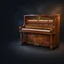
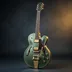

Which instrument for which part?
| Instrument | Use it for | In + Channel |
|---|---|---|
| Sampler | Drums and one-shots, one sound per channel. Also a loop chopped into slices you can replay. | A sample under Sampler, Project audio or File from disk… |
| Synthesizer | 808s, basses, leads, pads, plucks, arps and risers. Electronic sounds you can reshape. | A preset under Synthesizer, or Empty synth |
| Synkopa Instruments | Parts that should sound played by a person: pianos, electric pianos, strings, guitars, harp, vibraphone. | Synkopa Instruments — pianos, strings, guitars |
| Music Box | Delicate bell-like melodies for intros and lullabies. Nothing to download. | Music Box — modeled tines |
| Plugin instruments | A third-party VST3 instrument you already own. | Under Plugin instruments (VST3) |
Not sure? Drums: samplers. Bass: the synthesizer's 808 or Bass presets. Chords that should sound real: Grand Piano, ready without a download. Electronic chords and leads: synthesizer presets.
Add an instrument
- In the Channel Rack, click + Channel below the last channel.
- Pick an instrument from the menu.A new channel appears at the bottom of the Rack.
- Click the channel's name to open its window, or press F7 to write notes in the Piano roll.
Every instrument plays from steps, the Piano roll and a MIDI keyboard. To swap the sound of a channel and keep its notes and mixer routing, right-click the channel and choose Replace.
Sampler
The Sampler plays one audio file (a sample). It is what every drum row in the Rack uses. Add one from + Channel (a library sample, Project audio or File from disk…), or drag a sample from the Browser onto the Rack. Click the channel's name to open it.

- The start marker: drag it right to skip the start of the sound. FADE IN softens a hard cut.
- Cut group: channels in the same group stop each other.
- Envelope makes the sound follow the note's length.
Stop an open hi-hat when the closed one hits
On a real kit, closing the hi-hat silences the open ring. A cut group does the same between channels, and also stops long 808s from overlapping themselves.
- Open the open-hat channel and set Cut group to 1.
- Open the closed-hat channel and set its Cut group to 1 too.
- In the Rack, light step 1 on the open hat and step 3 on the closed hat, then play.The open hat's tail stops the moment the closed hat hits.
Play a sample up and down the keyboard
The root note is the key that plays the sample at its recorded pitch; other keys pitch it up or down (an octave up plays twice as fast). Pitched library sounds set it for you. For your own file, right-click the matching key on the window's keyboard. PITCH (semitones) and FINE (cents) retune the whole channel, and Reverse plays the trimmed part backwards.
Make notes control the tail
By default a sample plays to its end, whatever the note length. Switch on the envelope when a short note should cut the sound short.

- Click the Envelope switch to turn it on. Opening the tab alone changes nothing.
- Keep Sustain at 100% and shorten Release. To soften the start instead, lengthen Attack.
- In the Piano roll, draw a short and a long note for the same long sample.
- Open the Envelope tab and click the Envelope switch.
- Shorten Release and play.The short note now fades out early; the long one plays on.
A Channel Rack step has no length, so it always holds the sound. For a short tail on steps, set Sustain to 0% so the decay ends the sound.
Chop a loop into playable slices
Slicing cuts a loop into pieces and puts each piece on its own key. Use it to rearrange a drum break or play a phrase back in a new order, at any tempo.

- Transients cuts at every hit (raise Sensitivity to catch quieter ones); Equal cuts into even parts.
- Dump to pattern writes one note per slice at its original time.
- Press F4 for a new, empty pattern.
- Click + Channel and pick a loop under Sampler → Loops.
- Open the channel and its Slice tab.
- Click Transients for a drum loop, or Equal and a count for anything else.
- Click a slice to hear it. Drag a marker if a cut is in the wrong place; double-click to add or remove one.
- Click Dump to pattern.The Piano roll opens with one note per slice. Played in PAT, it sounds like the original loop.
- Move notes to new times, or up and down to swap slices.The root key plays slice 1, the next key up slice 2, and so on.
- A cut starts late: drag its marker toward the start of the hit.
- The loop plays at the wrong speed: the notes are placed at the project tempo. Set the tempo to the loop's tempo (often in its name) before dumping, or quantize afterwards.
- Some keys are silent: keys outside the slices play nothing. Clear turns slicing off.
Dump to pattern replaces this channel's notes in the current pattern; Ctrl + Z brings them back. To turn a fill into the last repeat of a section, place the pattern on the Playlist and make that clip unique.
Synthesizer
The built-in synthesizer makes its sound from oscillators instead of recordings, so every part of the sound can be changed. Start from a preset: under + Channel → Synthesizer, try 808 Deep for a low single note, Pluck Glass for short melodies, or Pad Warm for held chords.
- Audition presets: open the channel and click ‹ or › beside the preset name while a loop plays.
- Change the character quickly: turn the named Macros knobs. Each preset puts its main moves (brightness, growl, width) there.
Once you turn a knob the name shows Custom sound: your version is saved with the project.
Build a pluck from scratch
This recipe shows what the three most important sections do. Choose Empty synth, open it, stay on the OSC tab, and loop a C4 note in the Piano roll while you change things.

- Oscillator: the raw tone. A saw is brighter and buzzier than a sine.
- Filter: removes the highs above Cutoff, so the sound gets darker.
- Amp envelope: how the volume rises and falls on each note.
- Set Oscillator 1 to Saw.The tone gets bright and buzzy.
- In Filter, choose LP 24 and lower Cutoff toward 800 Hz.The buzz goes away. Raise Resonance a little to hear the cutoff point.
- In Amp envelope, keep Attack short, set Decay near 200 ms and Sustain to 0%.Each note now plucks and dies away, even if you hold it.
For a slow swell instead, try Attack 450 ms, Sustain 65% and Release 650 ms. Release is how long a note fades after you let go.
Hear a pluck and a swell on the same note. The pluck rises quickly and decays while the note is held. The swell takes longer to start and fades after the note is released.
Make the filter pulse with the beat
An LFO is a slow wave that moves a knob for you. Routed to the filter, it makes the sound open and close in time with the song. Raise Sustain again first, so the note keeps sounding while held.

- Source LFO 1, target Cutoff, and drag the amount to the right. At zero nothing moves.
- Give LFO 1 a sine shape and a rate of 1/4: one pulse per beat.
- Open the MOD tab.
- In the first row of Modulation (source → target), set the source to LFO 1 and the target to Cutoff.
- Drag the amount to the right.
- Set LFO 1's rate to 1/4 and hold C4.The buzz comes and goes once per beat.
More to try: on OSC, set Unison to 3 and raise Detune and Width for a wide, thick sound. On FX, add Delay to repeat short notes or Reverb to give them a tail.
Make an 808 or a bass slide between notes
Trap 808s and many bass lines bend from one note into the next instead of striking again. In Legato mode the synth plays one note at a time and slides when notes overlap.
- Load a preset from Synthesizer → 808, for example 808 Glide. (Or set any synth's voice mode to Legato.)
- Turn up Glide: it sets how long the slide takes.
- In the Piano roll, draw two notes so the second starts before the first ends.The second note slides out of the first, like one note bending.
Notes that don't overlap strike normally. In Mono mode every note glides from the previous one, overlapping or not.
Synkopa Instruments
Synkopa Instruments plays real recordings of acoustic and electric instruments from one channel. Use it when a part should sound played rather than synthesized. One channel plays one instrument; switch it at any time.
- Click + Channel → Synkopa Instruments — pianos, strings, guitars.A channel named Grand Piano appears.
- Click its name, then click Instruments.Every instrument shows as a card.
- Click a card.The channel plays that instrument at once, and the library stays open so you can try the next one.
- If a card shows Download with a size, click it. The instrument is saved into your sample library for every project.
- Double-click the card (or press Esc) to get back to the instrument's knobs.

- Click a card to play it on this channel. Double-click it to open its controls.
- Download fetches an instrument once. Only Grand Piano ships with the app.
On the instrument's controls, ‹ and › step to the previous or next instrument, so you can compare them over the same part. The filters above the cards narrow the list to Pianos, Electric pianos, Guitars, Strings or Mallets.
Pick the instrument
| Instrument | Sound | Good for |
|---|---|---|
| Grand Piano | Concert grand, full and bright | Ballads, chords, anything piano. No download. |
| Upright Piano | Felt and wood, intimate | Lo-fi, indie, close and soft parts |
| Wurlitzer EP200 | Reedy, barks when hit hard | Soul, pop and R&B chords |
| Electric Grand CP80 | Bright, glassy attack | 80s ballads, cutting chords |
| Pianet T | Soft, woody, short | Gentle rhythmic chords |
| String Section | Violins, violas and cellos together | Pads, swells, cinematic and pizzicato parts |
| Solo Violin | One violin with bow and vibrato | Melodies and fast runs |
| Concert Harp | Plucked strings that ring on | Arpeggios and glissandi |
| Hollow Body Guitar | Clean, bright electric | Strummed chords, rhythm, lines |
| Jazz Club Guitar | Warm, round archtop | Jazz comping, mellow melodies |
| Vibraphone | Soft mallets, metallic tail | Jazz, lo-fi and chill chords |
The knobs
- Tone
- Darker (left) or brighter (right).
- Width
- Stereo width: 0% is mono, 100% as recorded. Dimmed on instruments recorded in mono.
- Tune
- Fine tuning in cents (100 cents = a semitone), to match a recording.
- Attack
- Fades every note in. Long values turn strings into swells.
- Release
- How long a note rings after the key comes up. Double-click for Auto: each recording's natural fade.
- Dynamics
- How much hitting harder makes a note louder. The tone still changes with how hard you play.
- Noise
- Level of recorded release sounds (piano dampers, fingers leaving strings), where the instrument has them.
Many instruments have several recordings per key for different playing strengths (velocity layers), and some rotate between recordings so repeated notes don't sound identical (round robins). Double-click any knob to reset it; right-click it to automate it.
The channel is silent? The instrument is not downloaded yet: its controls say Not downloaded and offer Download. Export also waits until every instrument the song uses is loaded, and refuses to start if one is missing, instead of rendering silence.
 Grand Piano
Grand Piano
A Yamaha C5 concert grand with four velocity layers and the sound of the dampers as you let go. Ships with the app.

- Try it: draw two C4 notes with velocities near 30% and 85%. The harder one is brighter, not just louder. Then play a detached phrase with Noise at 100% and at 0% to hear the dampers come and go.

Upright PianoA felt-and-wood upright with three velocity layers and two round robins. Softer and closer than the grand.

- Try it: eight C4 eighth notes at one velocity. Each strike sounds slightly different. Press ‹ to switch to the Grand Piano and compare the woodier attack.
 Wurlitzer EP200
Wurlitzer EP200
A reed electric piano that gets raspier the harder you play.

- Try it: repeat C4–E4–G4, alternating soft and accented notes, and listen for the bark on the accents. Lower Tone to tame the edge.
 Electric Grand CP80
Electric Grand CP80
Yamaha's stringed electric grand: a bright, glassy attack that cuts through a mix.

- Try it: play C3–G3–E4, then the same chord on the Wurlitzer, and compare glass against reed. Lower Tone to soften the CP80's attack.
 Pianet T
Pianet T
A plucked-reed electric piano: soft, woody and short.

- Try it: hold C4–E4–G4 and hear it fade on its own. With Attack at zero you hear a tiny pluck; raise it and the same chord fades in.
String Section
Violins, violas and cellos playing together. Its articulations (playing styles) are buttons above the knobs: Sustain holds the bow, Tremolo repeats fast bow strokes, Pizzicato plucks, Spiccato bounces the bow for short notes.
It starts on Auto: drawn notes shorter than about 130 ms play spiccato, longer ones sustain, and notes played live sustain. To switch articulation inside a part, put a note on one of the tinted keyswitch keys (C1–D♯1) just before the phrase. A keyswitch changes the style instead of sounding; hover over an articulation button to see its key.

- Try it: at 120 BPM, alternate eighth and sixteenth notes on C4 with Auto selected. The short ones play spiccato. Hold C4 on a keyboard to hear sustain.
A held string note lasts as long as its recording (a few seconds), not as long as the note.
 Solo Violin
Solo Violin
One violin with audible bow and vibrato, for melodies and fast runs. Same articulations and keyswitches as the String Section, with Arco (bowed) in place of Sustain.

- Try it: a long note followed by two short ones, first on Arco, then on Pizzicato. The attack changes completely.
 Concert Harp
Concert Harp
A plucked harp whose strings keep ringing after a short note ends.

- Try it: very short notes C4, E4, G4, C5 in a row. The tails still overlap into a chord. Space the notes out to hear each pluck decay.

Hollow Body GuitarA clean Gretsch hollow body for strummed chords, rhythm and picked lines. Like a real guitar, each note goes to one of six strings, and a new note on a string stops the one ringing there, so repeated strums don't pile up.

- Try it: select Sustain and write a C chord as C3–E3–G3–C4–E4. Select it and choose Tools → Strum in the Piano roll to spread the starts a little. Compare with the unstrummed chord.
Both guitars have Sustain (keyswitch C2) and Staccato (C♯2). On Auto, drawn notes shorter than about 150 ms play staccato.
Jazz Club Guitar
A warm, round Höfner archtop for jazz comping and mellow melodies.

- Try it: loop a short offbeat chord and switch between Sustain and Staccato. Staccato leaves a tight gap before the next chord.
 Vibraphone
Vibraphone
A soft-mallet vibraphone recorded with the motor off, in two dynamics.

- Try it: a soft C4 then a hard one, to compare the mallet strikes. Play a chord with a short Release, then double-click the knob for Auto and hear the long metallic tail return.
Music Box
A cylinder music box for intros, lullabies and delicate bell-like melodies. Its sound is calculated from a plucked steel tine, the pin's tick and the wooden box, so there is nothing to download. Add it with + Channel → Music Box — modeled tines and write in the upper octaves, where music boxes sound best.

- Ring: how long notes ring while held. Low for a dry, plucky box; high for long overlapping notes.
- Mechanical: the pin's tick at the start of each note. 0% for a pure bell.
- Release: how long a note fades after you let go.
- More real: raise Mechanical and Body (the wooden box's resonance).
- Cleaner, more bell-like: lower them and raise Brightness.
- Wider: raise Spread to fan low and high notes across the speakers.
Harder notes sound brighter, not just louder, so varying velocity in the Piano roll makes it feel mechanical and real.
Use a VST3 instrument you own
Synkopa finds the VST3 instruments installed in the standard VST3 folders and lists them under Plugin instruments (VST3) in + Channel (grouped by maker when there are many).
- Just installed one? Click Rescan plugins at the end of that list.
- No VST3 instruments found: nothing is installed in the standard VST3 folders. Install the instrument there, then rescan.
Clicking a plugin channel's name opens the plugin's own window. Its settings are saved with the project. For effect plugins, see the Plugin guide.